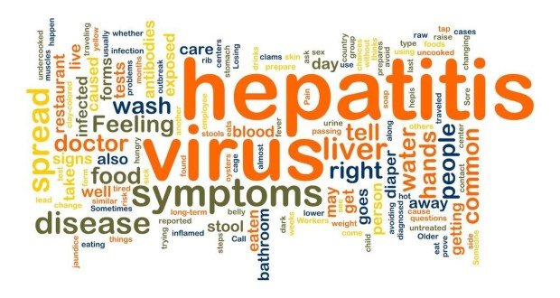
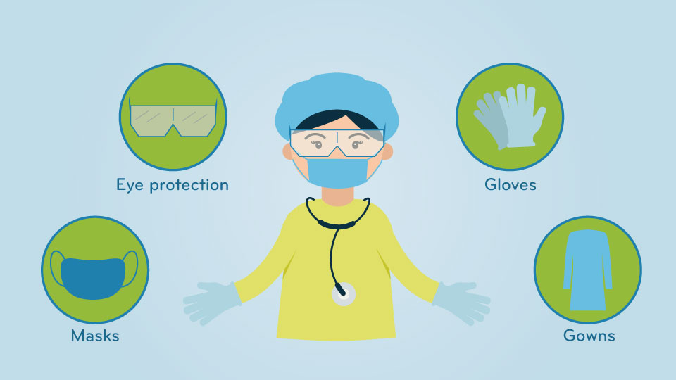
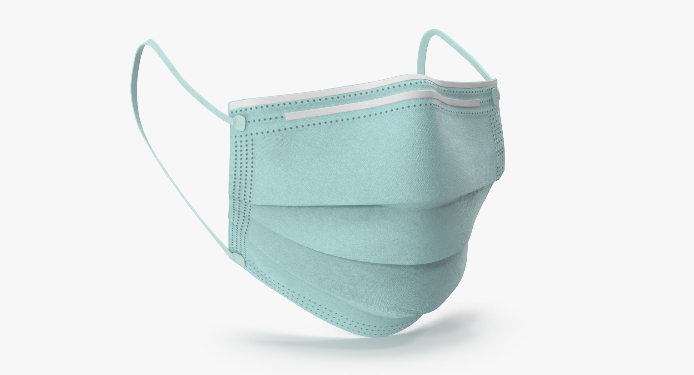
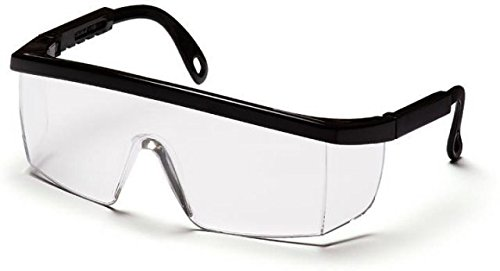
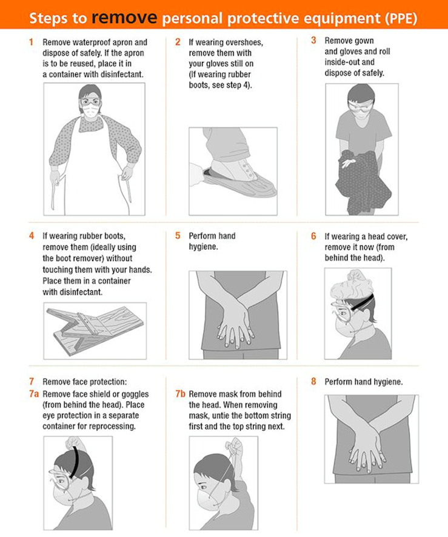

Infections are caused by harmful germs entering the body. They come in two forms: Bacteria and Virus. Some illnesses are highly contagious. An increase risk exists when coming into contact with body fluids. Even when working with clients who do not appear to be ill, you will be at risk of becoming infected as you will often have to work with body fluids.
When used, greatly reduce the risk of infection. Care is needed not only to protect you, but also to ensure the well being of your client. You can easily infect your client with illnesses or infections that you might have. For those clients who have weaknesses with their immune systems, even catching a common cold could be life threatening. In order to safeguard both you and your client from infection, special techniques, known as Universal Precautions, have been developed that when followed closely, will greatly reduce risk of infection for both the clinician and the client.
The first step is to gain a clear understanding of what causes infections. Infections occur when harmful germs enter the body. Germs are tiny microorganisms that live in and on the body. Some of them are very useful to the body as they help us to digest food. Germs come in the form of bacteria and viruses. Our skin is the best weapon we have for keeping harmful bacteria and viruses from invading the body. Once these germs have made it inside our body, then we rely on our immune system to protect us.Many of the patients that we work with suffer from lowered immune systems. (Chronically Ill patients, Geriatric Patients). This means they aren’t able to handle germs as well as those with a healthy immune system. Also, observe and take special precautions for those clients/patients who have open sores, wounds, ulcers, as they basically have holes in the armor of skin.
*When caring for someone who is in this type of risk category, practicing Universal Precautions can be a lifesaving endeavor.
Germs can be spread in several different ways. You can spread germs by direct or indirect contact, vehicle spread, airborne contact and vector spread
By understanding how germs are spread, you can now learn how to avoid spreading them. Bu using some common sense techniques called Universal Precautions; you can greatly reduce the spread of these germs. Universal Precautions consists of techniques such as hand washing, personal hygiene, protective barriers, cleaning and proper waste disposal.
One of the best ways to reduce the spread of germs and disease is to wash your hands frequently throughout the day. Your hands are constantly touching infected areas of the body and high transfer areas like doorknobs, dishes and water faucet handles. This is why it’s so important to wash your hands thoroughly.
*Keep in mind that any time you touch your hands to your ears or mouth you have probably added infectious germs to your hands and you should wash them before interacting with your patient/client.
Although the skin is the best weapon we have in keeping dangerous bacteria and viruses from entering the body, we need to take even more precautions to reduce the chance of infection. The simplest and most effective way to aid the body is to use what are called protective barriers. Protective barriers include: gloves, masks, protective eyewear, gowns and aprons. Not only is it important to use protective barriers, but it’s also important to learn how to use them correctly.
Surgical gloves come in several varieties, most commonly, vinyl, latex and nitrile. These gloves are especially useful in helping you to keep infected fluids from transferring from you to your client, or from your client to you. Because of the nature of your job as an assistant, you will frequently be in contact with bodily fluids. Wear gloves whenever you are in contact with bodily fluids, or if you have any cuts, cracks or open sores on your hands.
Common duties that you’ll be performing for your client where you’ll be at high risk of being in contact with bodily fluids include:
*Personal protective equipment only helps protect us if we also REMOVE it properly. If gloves aren't removed properly, you may still be negatively affected by harmful materials. The germs and other substances can seep into your clothes, be flipped onto you or others, contaminate sanitized areas, etc.
Masks are helpful in keeping germs from getting in through your nose and mouth. You should wear a mask when there is a risk or splashing bodily fluids of if the patient has a bad cough. When removing the mask, make sure that you take them off with the elastic part or string, so that you don’t touch the potentially infected area of the mask.
Avoid touching the outside of face mask during taking-off as it may be covered with germs. After taking off the surgical mask, discard in a lidded rubbish bin and perform hand hygiene. Change surgical mask at least daily. Replace the mask immediately if it is damaged or soiled.
Mold or pinch the stiff edge to the shape of your nose. If using a face mask with ties: Then take the bottom ties, one in each hand, and secure with a bow at the nape of your neck. Pull the bottom of the mask over your mouth and chin. Clean your hands with soap and water or hand sanitizer before touching the mask.
Eye Protection will be important to wear if there is a risk of being splashed in the face with bodily fluids. In most circumstances, those who wear glasses won’t need to wear eye protection.
If the area for clean up is particularly messy, the use of a gown and or an apron would provide additional protection from germs for your clothing or on the skin.
Always wear gloves and/or eyewear when disposing of bodily fluids and hazardous waste. Bodily fluids should be flushed down the toilet.